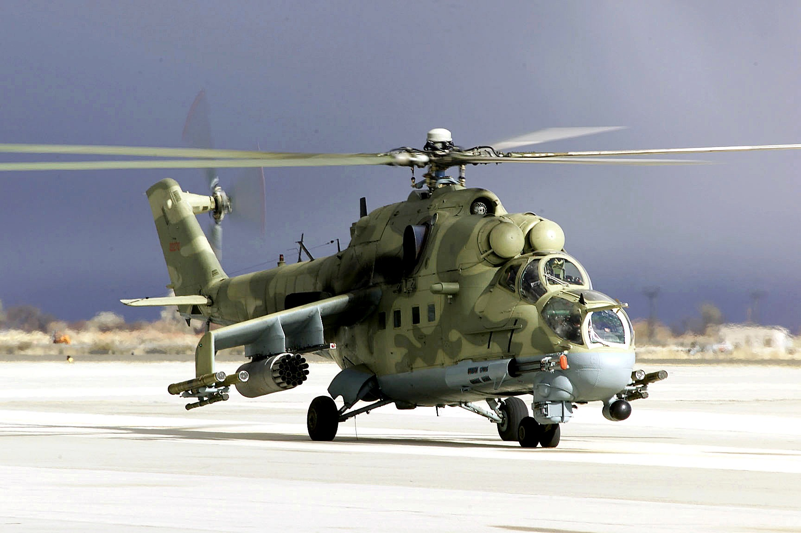
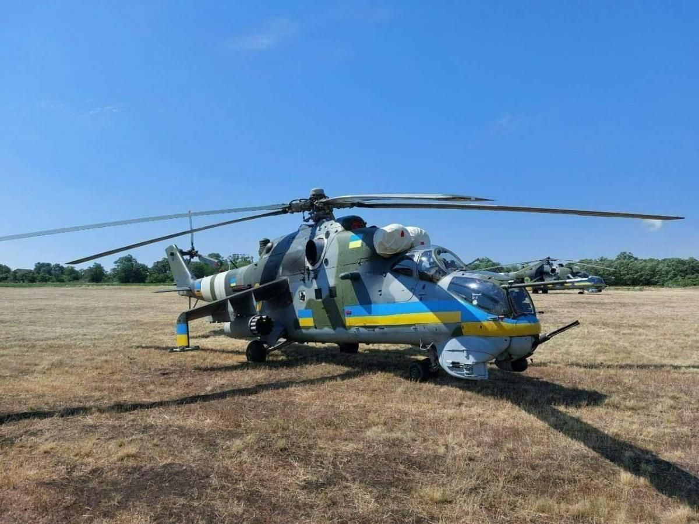
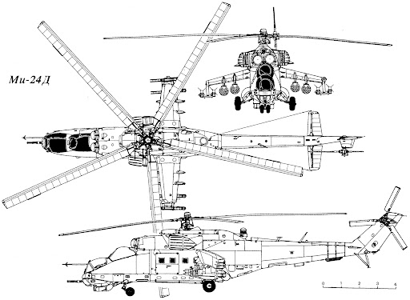
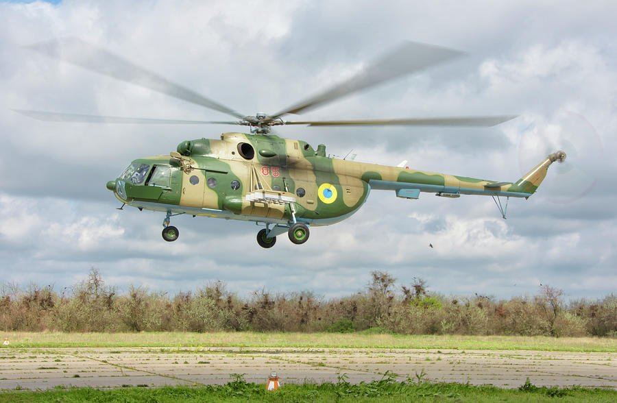
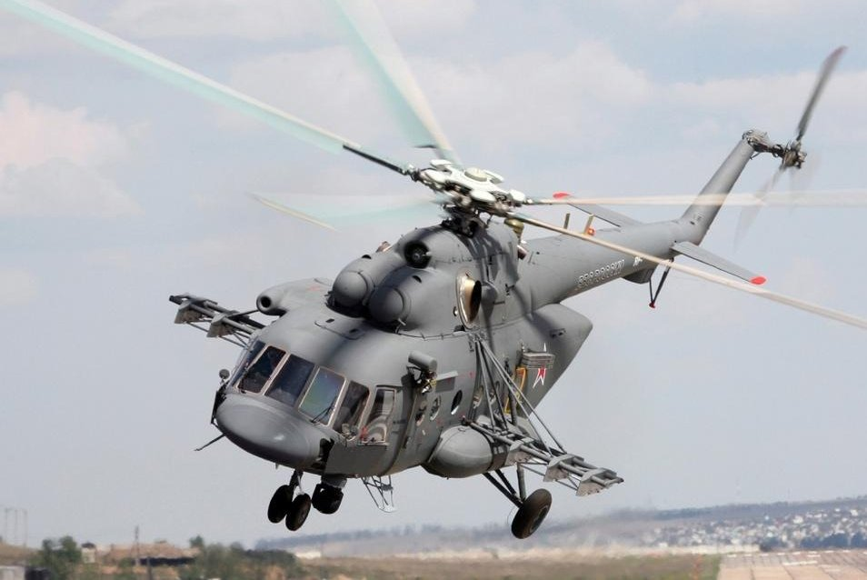
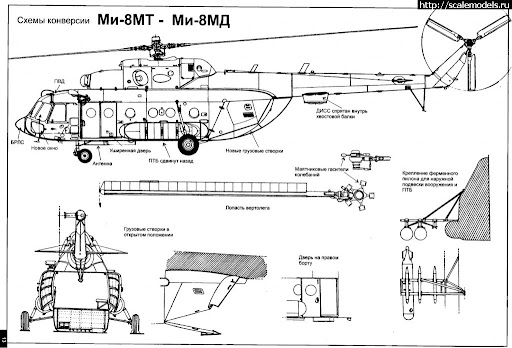
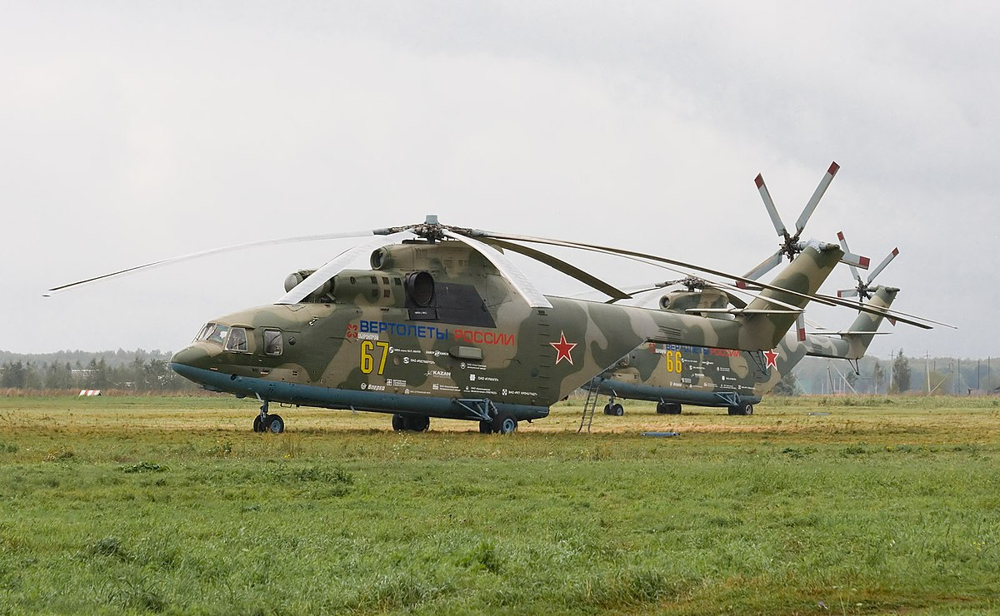
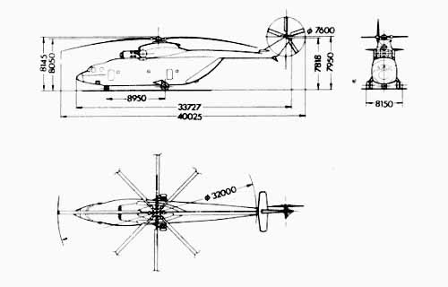
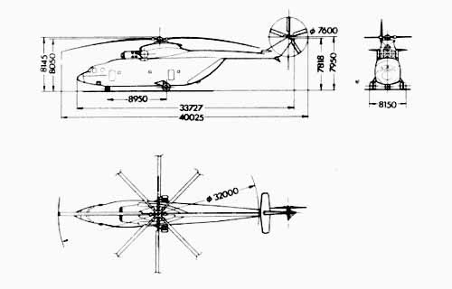
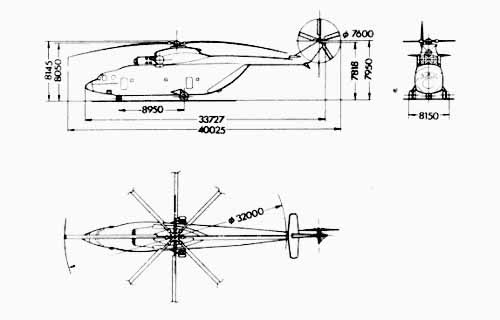

Радянські вертольоти
Мі-24
Мі-24 — радянський ударний вертоліт, який також використовувався як вертоліт-нарядник. Відомий своєю здатністю нести важке озброєння і броню.



| Довжина | Розмах крил | Швидкість | Маса | Двигуни |
|---|---|---|---|---|
| 21,5 м | 18,0 м | 330 км/год | 8 000 кг | 2 × ТВ3-117 |
Мі-8
Мі-8 — універсальний вертоліт, який використовувався для перевезення вантажів та пасажирів. Це один з наймасовіших вертольотів у світі.



| Довжина | Розмах крил | Швидкість | Маса | Двигуни |
|---|---|---|---|---|
| 17,0 м | 20,0 м | 250 км/год | 7 000 кг | 2 × ТВ2-117 |
Мі-26
Мі-26 — найбільший серійний вертоліт у світі, що використовується для важких вантажів. Відомий своєю вантажопідйомністю і розмірами.

 


| Довжина | Розмах крил | Швидкість | Маса | Двигуни |
|---|---|---|---|---|
| 40,0 м | 32,0 м | 295 км/год | 28 200 кг | 2 × Д-136 |